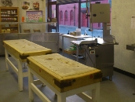

Sample menu:
Welcome to Teesside Ship Supplies Ltd
Welcome to the online home of Teesside Ship Suppllies Ltd.
Established in 1968, Teesside Ship Supplies Ltd has been in business for over 43 years. We pride ourselves on our customer service and produce and always aim to offer the very best in both.
To make it even easier for our customers to purchase the very best in delicious and affordable meat, this website has been developed for you. If there is anything that you cannot find on the site, or you have a question about our produce or services, please feel free to write, email or call us and we will be only too happy to help you.
